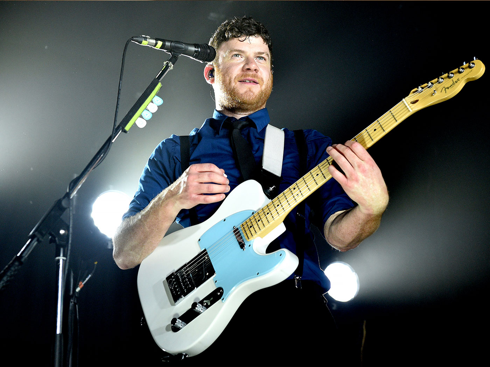

Enter Shikari - to brytyjski zespół rockowy znany z eklektycznego brzmienia łączącego elementy post-hardcore, elektroniki i alternatywnego rocka.
| Muzyk | Główne instrumenty | Od kiedy w zespole | Zdjęcie |
|---|---|---|---|
| Rou Reynolds | Główny wokal, keyboard, syntezator, programowanie | 1999 | |
| Rory Clewlow | Gitara prowadząca, gitara rytmiczna | 2003 |  |
| Chris Batten | Gitara basowa | 1999 | |
| Rob Rolfe | Perkusja | 1999 |
Rok wydania: 2007
Rok wydania: 2009
Rok wydania: 2012
Rok wydania: 2015
Rok wydania: 2017
Rok wydania: 2020
Rok wydania: 2023